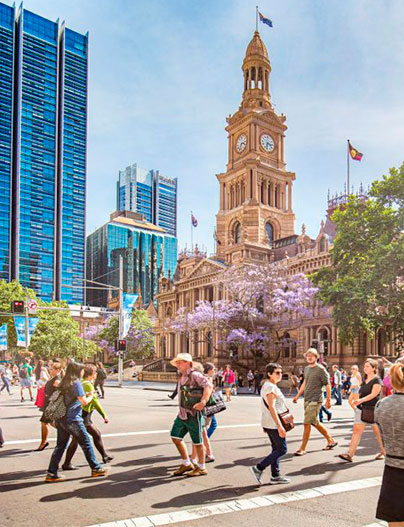

Inicio
Inicio
Información
Ubicación e historia
Geografía y clima
Bandera
Idioma y demografía
Turismo
Puntos Turisticos
Festival Vivid Sydney
Parque Nac. Montañas Azules
Parque Nac. Ku-Ring-Gai Chase
Playa Manly
La Ópera de Sídney
Contacto
Contactate con nosotros
Nombre completo
Dirección de Email
Dejanos tu mensaje...
Agregar certificado de vacunación:
¿Deseas recibir Información?
Noticias
Futuros eventos
